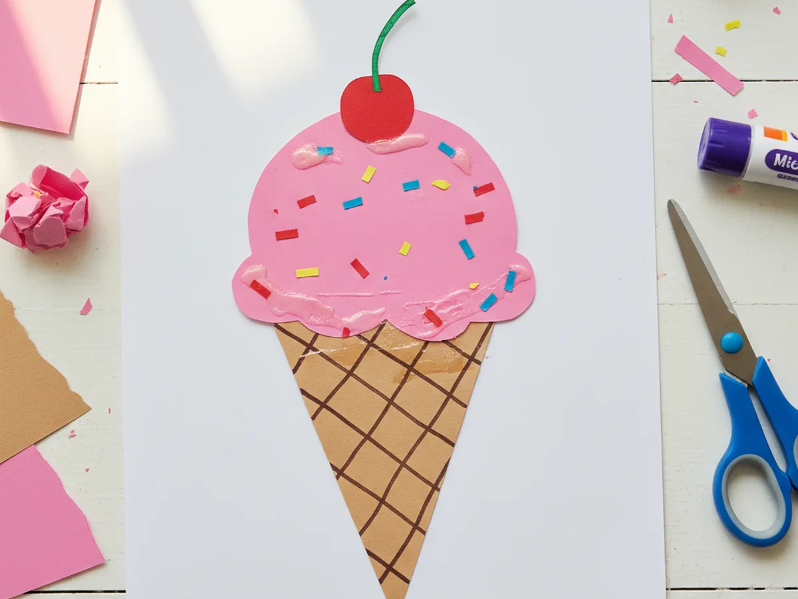
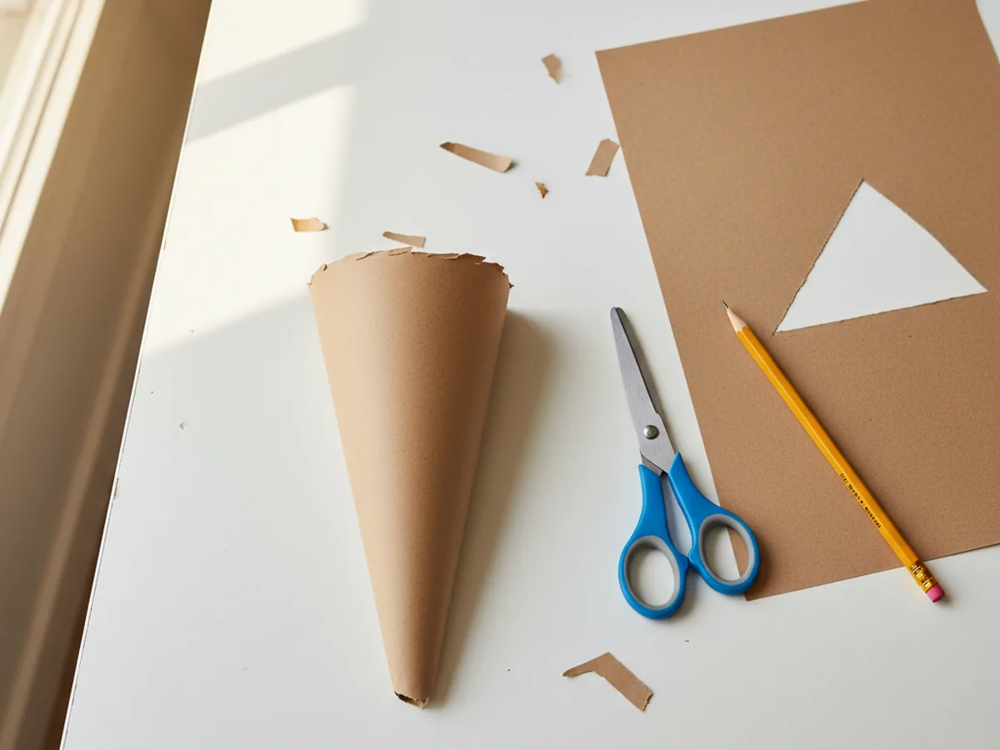
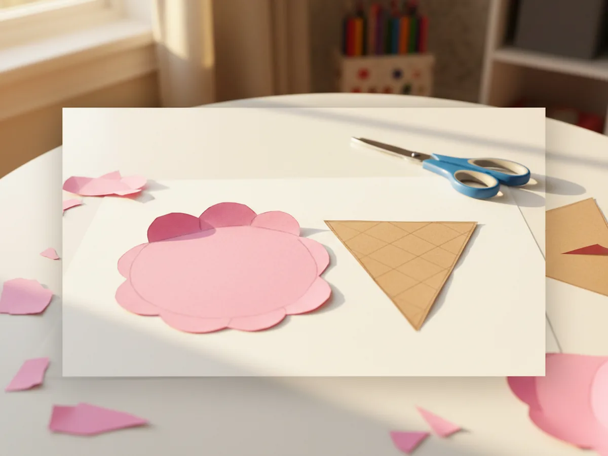
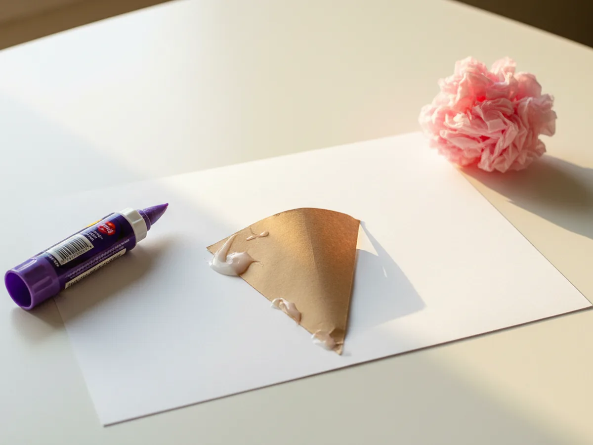
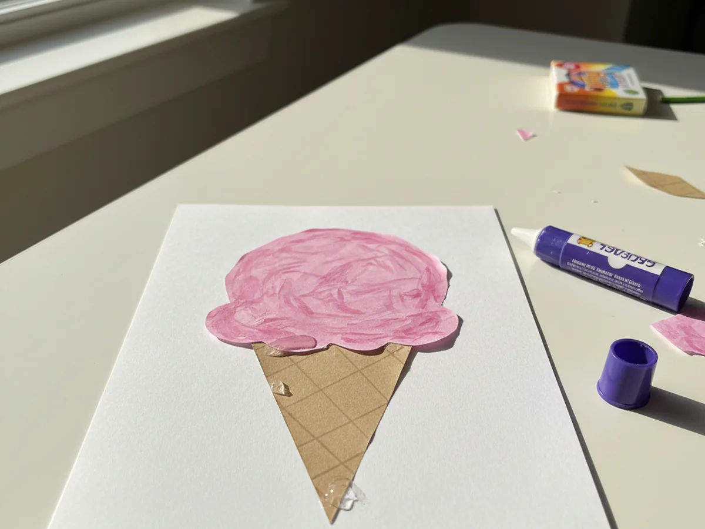
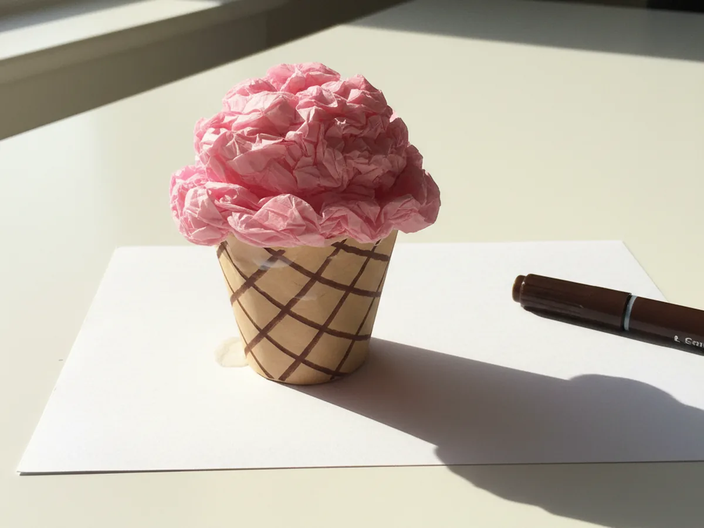
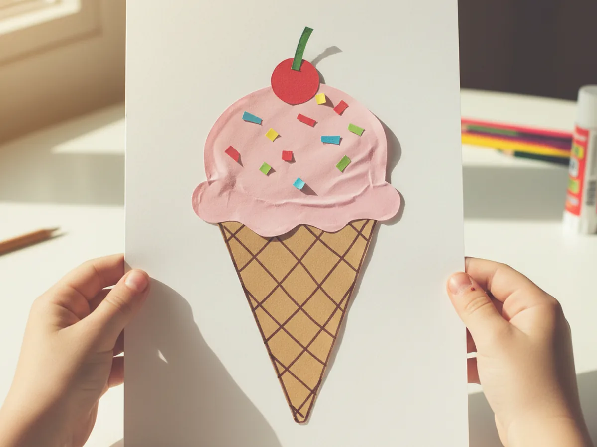

Some crafts just feel like a sunny afternoon, and this ice cream paper craft is one of them. We are turning a few sheets of construction paper into the cutest little ice cream cone, with a fluffy pink scoop, tiny rainbow sprinkles, and a sweet paper cherry on top. It comes together in about thirty minutes, with no mess, no melting, and no special crafting skills needed. 🍦
The reason this easy ice cream paper craft is such a winner is that every single piece is just a simple shape. A triangle for the cone, a fluffy cloud for the scoop, a few tiny rectangles for the sprinkles, and you are basically done. Even my little one who is still learning how to hold scissors had no trouble cutting the pieces, and she gasped the moment the pink scoop landed on top of the cone. That tiny gasp is exactly the moment we craft for.
Why Kids Love This Craft
Children adore this ice cream paper craft because it looks just like a real ice cream cone, only without the drips. The familiar shape feels instantly recognizable to even the youngest crafters. They know exactly what an ice cream cone is, they have seen one a hundred times at the park or the beach, and now they get to make their own. That feeling of "I made my favorite treat" is huge for a little one and keeps them happily focused for the full thirty minutes.
This paper ice cream craft is also wonderful for fine motor practice. Cutting the cone triangle and the fluffy scoop builds the same scissor skills they need for school cutting projects. Picking up the tiny paper sprinkles one by one is a perfect pincer grip workout. And dotting the glue stick onto each sprinkle teaches them careful, precise hand control. All of that learning happens quietly while they think they are just playing.
Best of all, this simple ice cream paper craft ends with a real keeper. Your child can tape it to the fridge, stick it on a window, or hand it proudly to dad when he gets home from work. That little moment of pride is exactly the kind of warm shared memory crafting is really about. 🌈
What You'll Need
Here is everything you need for this ice cream paper craft. I always lay the colorful paper sheets out on the table first so my little one can see all the pretty colors and pick which scoop flavor she wants to make.
- Crayola Construction Paper, 240ct, 12 Assorted Colors, the perfect multi-color pack for the brown cone, the pink scoop, and the rainbow sprinkles.
- White Cardstock, 8.5 x 11, Heavyweight, 30 Sheets, sturdy enough to display the finished ice cream paper craft on the fridge or a windowsill.
- Elmer's Disappearing Purple Glue Sticks, washable and easy for tiny fingers to twist up and apply cleanly.
- Fiskars 5 Inch Blunt Tip Kids Scissors (3 Pack), the right safe size for cutting the cone, the scoop, and the tiny paper sprinkles.
- Crayola Broad Line Markers, 10 Classic Colors, ideal for drawing the criss cross waffle cone pattern.
- Mini Pom Poms (1800 Pieces, Assorted Colors), optional fluffy alternative if you would rather use real pom poms as the sprinkles.
- A pencil, for lightly sketching the cone and scoop shapes before cutting.
Step-by-Step Instructions
This ice cream paper craft walks through six gentle steps that go from cutting the cone to adding the very last sprinkle. Take your time and let your child do as much of the cutting and gluing as they can comfortably manage.
Step 1: Cut Out the Cone Shape
Start with a sheet of tan brown construction paper. Help your child lightly draw a tall triangle with a pencil, about five inches tall and three inches wide at the top, with the point facing down. Then let them cut it out with kid scissors. Wonky edges only make the ice cream paper craft look more handmade and charming, so do not worry about cutting perfectly straight lines.

Step 2: Cut Out the Pink Scoop
Now grab a sheet of pink construction paper. Lightly sketch a fluffy cloud shape with three little curves on top, like a soft puffy ice cream scoop. Make the bottom of the scoop a little wider than the top of the cone so it sits nicely on top later. Cut the scoop out together. If your child wants chocolate ice cream instead of strawberry, use brown paper here, or mint green for a fresh minty look.

Step 3: Glue the Cone Onto the Cardstock
Take a sheet of white cardstock and lay it flat on the table in portrait orientation. Show your child how to swipe the purple glue stick across the back of the brown paper cone, then press it down firmly in the bottom center of the cardstock with the cone pointing downward. Press for a few seconds so the glue grabs. The white cardstock acts like a clean little display board for the finished paper ice cream cone craft.

Step 4: Glue the Scoop Above the Cone
Now for the satisfying part. Add a generous layer of glue to the back of the pink scoop and press it just above the cone, so the wide bottom of the scoop overlaps the wide top of the cone by about half an inch. Hold it down for a few seconds. Suddenly the white cardstock looks like a real little ice cream cone, and your child will probably let out the cutest happy gasp. 💕

Step 5: Draw the Waffle Cone Pattern
Take a dark brown broad line marker and gently draw diagonal lines across the cone, going one way and then the other, to create a classic waffle cone criss cross pattern. Five or six lines in each direction is plenty. The lines do not need to be perfectly straight or evenly spaced, and slightly wobbly marker work just makes this ice cream paper craft look more child made and adorable.

Step 6: Add Rainbow Sprinkles and a Cherry
Now for the very best part. Cut tiny rectangles from scraps of red, yellow, blue, and green construction paper, each about the size of a grain of rice. Aim for ten to fifteen sprinkles total. Add a little dot of glue stick to the back of each one and let your child press them randomly onto the pink scoop, pointing in different directions like real ice cream sprinkles. Then cut a small red paper circle with a tiny green stem and glue it right on top of the scoop as a sweet little cherry. Once the cherry is in place, the ice cream paper craft is officially finished and ready to display. 🎉

Variations to Try
Three Scoop Tower: Instead of one pink scoop, cut three fluffy scoops in different colors, like pink for strawberry, brown for chocolate, and pale yellow for vanilla. Stack them above the cone for a tall triple scoop ice cream that looks just like the real thing at an ice cream parlor.
Cotton Ball Scoop: Skip the paper scoop and let your child glue two or three soft white cotton balls above the cone instead. The fluffy texture feels just like vanilla soft serve and turns the craft into a fun little sensory project for younger toddlers who are not quite ready for tiny scissor work.
Summer Birthday Card: Fold the white cardstock in half before starting and place the ice cream on the front of the card. Inside, your child can write a sweet "Happy Birthday" message in marker. It makes the prettiest handmade summer birthday card for a friend, cousin, or grandma.
Final Thoughts
This ice cream paper craft is one of those gentle little projects that takes almost no setup, leaves almost no mess, and gives the biggest happy smile when the very last sprinkle lands on the scoop. The cutting, the gluing, the careful placing of every tiny detail, every part of it unfolds at a calm pace that fits perfectly into a slow Saturday morning, a rainy afternoon, or a quiet hour after lunch. Whatever the moment, your child will remember the time the two of you made an ice cream cone out of paper side by side.
If your little one finishes their first sweet paper cone, save this article on Pinterest so other craft-loving mamas can find it easily. Happy crafting!
More Crafts You'll Love
If your child loved this ice cream paper craft, they will adore these other sweet food themed projects too: